Задача урока: познакомиться с методом
прикрепления картинок через сервер в базу данных, сделать редактирование,
удаление и публикацию постов.
На занятии мы
узнаем:
1.
Как работает глобальная
переменная для прикрепления картинок.
2.
Как оптимизировать ошибки,
связанные с прикрепление картинок.
3.
Как сделать статус
публикации.
4.
Как выполнять редактирование
постов через админ-панель.
Следующим этапом, для которого нужна была связь,
станет подвязка изображения. Необходимо написать код, позволяющий добавлять
изображение в базу данных названием. Добавим строку в path.php,
где realpath() указывает путь
к домену «socialsite»:
|
<?php define("BASE_URL", ‘http: //localhost/Socialsite/"); define("ROOT_PATH", realpath((dirname(_FILE_)))); |
|
|
Функция «realpath()» - раскрывает
все символические ссылки, переходы типа /./, /../ и лишние символы / в пути
path, возвращая канонизированный абсолютный путь к файлу. Загрузка одного файла - чтобы форма отправила файл, необходимо использовать
только метод POST для отправки данных и добавить к тегу <form> атрибут
enctype="multipart/form-data", который определяет способ
кодирования данных формы при их отправке на сервер. Загрузка
нескольких файлов - для загрузки сразу нескольких файлов к <input type="file">
нужно добавить атрибут multiple, а к имени
поля – []. |
В файле create.php добавим метод enctype в класc «row add-post», позволяющий хранить данные нашей
оперативной памяти (рис. 15.1).
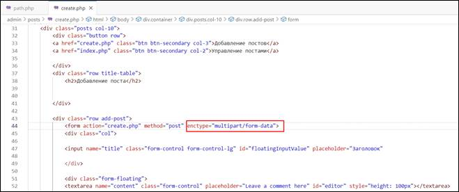
Рис. 15.1. Добавление метода enctype в класс «row add-post»
Перейдем в файл posts.php
и изменим массив для добавления файлов. Прежде узнаем, что в нем находится,
обратившись к глобальной переменной массива FILES, используя функцию printUser (рис. 15.2).
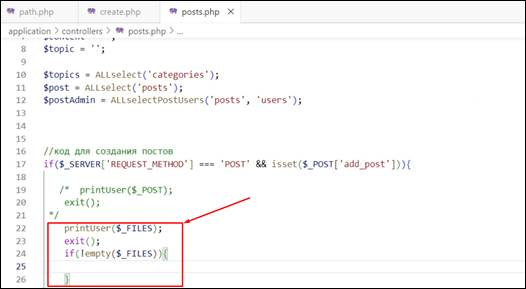
Рис. 15.2. Обращение к глобальной переменной FILES
Переходим на сайт и жмем кнопку
«Опубликовать» (рис. 15.3).
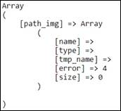
Рис. 15.3. Результат
обращения к файлу create.php
|
|
Свойство name – имя документа. Свойство type – тип документа. Свойство tmp_name – место временного хранения
загруженного документа. Свойство error – количество ошибок. Свойство size – размер документа. |
То же самое проделываем с добавлением какой-либо картинки/документа.
Получаем следующий массив (рис. 15.4).
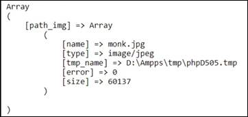
Рис. 15.4. Результат добавления картинки в
массив
При проверке
публикации какого-либо документа ошибки отсутствуют. Следующим этапом будет
добавление папки для хранения будущих документов на сайте.
В ранее созданной
папке images создаем новую
папку posts. В ней и будут
храниться все файлы, загружаемые на сайт.
После проверки выдачи массива можно закомментировать printUser($_FILES) и продолжить работу с условием (рис. 15.5).
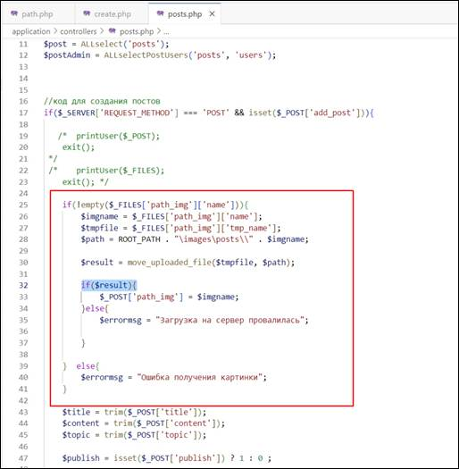
Рис. 15.5. Передача файлов на сервер
У данного метода есть одна проблема. При добавлении нескольких постов,
где нужен один и тот же документ, потребуется изменять конечное название файла
в нашем хранилище posts.
Однако при изменении одной картинки любым способом картинка исчезнет со всех
постов на сайте. Чтобы такого не случилось, необходимо кастомизировать картинку
таким образом, чтобы она отличалась по каким-либо критериям. Одним из решений
данной проблемы является привязка даты к документу.
|
|
Супер
глобальная переменная $ FILES – ассоциативный массив (array) элементов, загруженных
в текущий скрипт через метод HTTP POST. |
Текст
|
$imgname =time(). "-". $ FILES[‘path_img’][‘name']; |
Проверяем
добавление документа через пост на сайте, после чего смотрим результат в базе
данных posts (рис. 15.6).
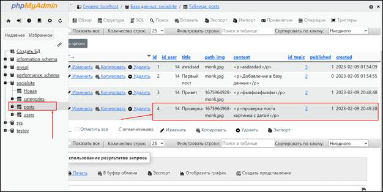
Рис. 15.6. Результат добавления нового поста
на сайте
Модифицируем данный код, проверяя, является ли документ изображением
(рис. 15.7).
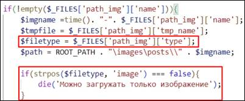
Рис. 15.7. Проверка на наличие изображения
при публикации поста
У метода die() есть проблема, при которой ошибка
выводится на другую страницу, что убивает любое выполнение кода и ведет к
потере страницы.
Решением данной
проблемы станет создание определенного массива, в котором будут отрабатываться
все ошибки отдельно.
Изменим $errormsg,
определив его как массив, и изменим все строки, где ранее был вывод ошибки
(рис. 15.8 – 15.9).
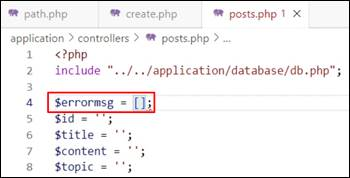
Рис. 15.8. Добавление массива в $errormsg
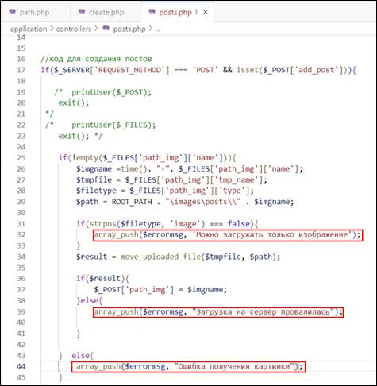
Рис. 15.9. Пример вывода $errormsg в posts.php
В папке include создадим файл errorinfo.php,
в котором будет храниться вся информация об ошибках. После этого заранее
модифицируем create.php, в который будет подтягиваться данный файл
(рис. 15.10).
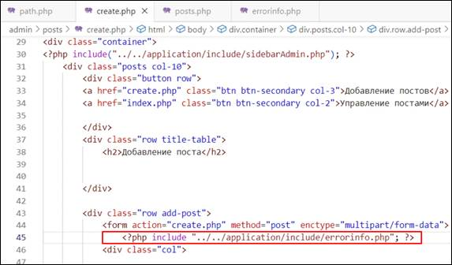
Рис. 15.10. Добавление errorinfo.php в create.php
Файл errorinfo.php будет считать количество ошибок и, если их
количество больше нуля, то будет выводить ошибки сразу же на том же окне.
Учитываем, что внутри условия необходимо прописать <?php?> (рис. 15.11).
|
<?php if(count($errormsg)> 0): ?> <?php foreach ($errormsg as $error): ?> <li><?=$error; ?></li> <?php endforeach; ?> <?php endif;
?> |
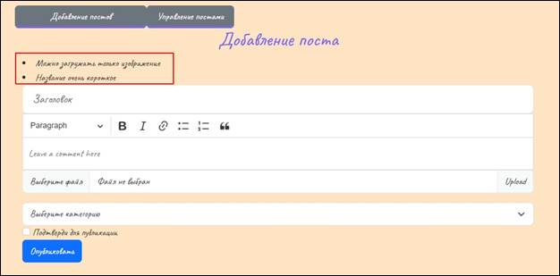
Рис. 15.11. Вывод ошибок
Для создания функции редактирования постов,
опубликованных на сайте, необходимо в папке posts создать файл edit.php.
Перед редактированием данного файла изменим index.php
в ветке редактирования, чтобы получать id записи (рис. 15.12).
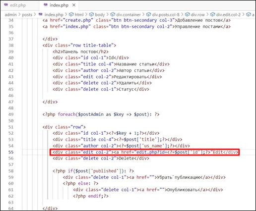
Рис. 15.12. Получение id поста в edit.php
Далее скопируем текущий код из create.php
в edit.php. Меняем переменную «add_post» на «edit_post» в коде второго файла (рис. 15.13).
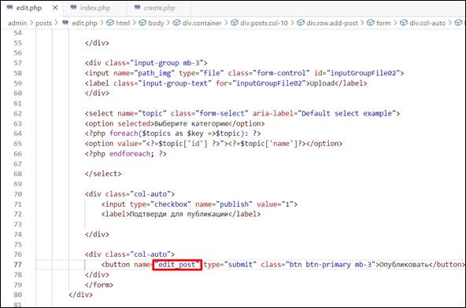
Рис. 15.13. Замена кнопки «add_post» на «edit_post»
Чтобы не возвращаться к posts.php
и добавлению переменных, определим их заранее. Для редактирования записей
необходимо определить переменные «id»,
«content», «publish» и «topic» (рис. 15.14).
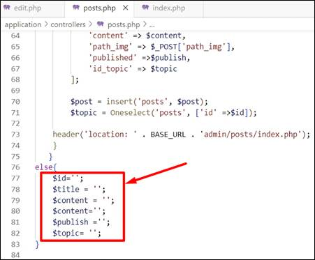
Рис. 15.14. Добавление новых переменных для
редактирования кода
После этого изменяем код для редактирования
записей (рис. 15.15).
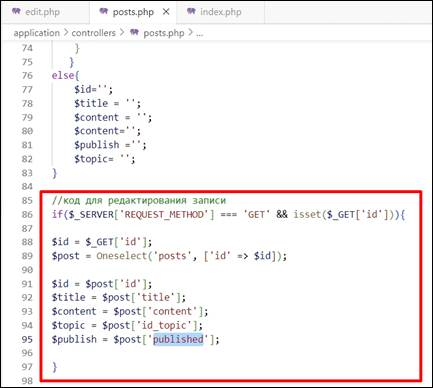
Рис. 15.15. Код редактирования записей в posts.php
В edit.php открываем тег <?php?>, прописывая подтверждение публикации
записи и кнопку публикации (рис. 15.16).
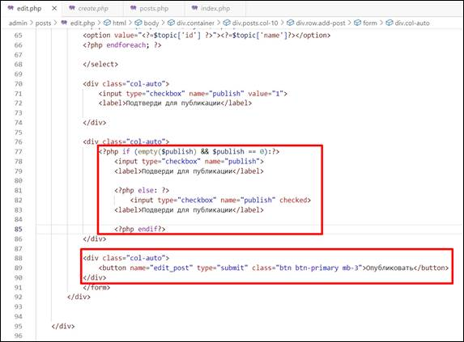
Рис. 15.16. Код для подтверждения публикации
Далее необходимо сделать так, чтобы при выборе редактирования записи
подтягивались категории редактирования поста.
В данном файле удаляем строку выбора
категории и меняем значение create.php на edit.php (рис. 15.17
– 15.18).
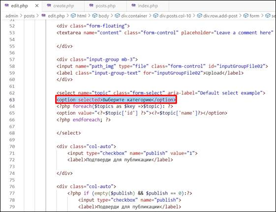
Рис. 15.17. Удаление строки выбора категории
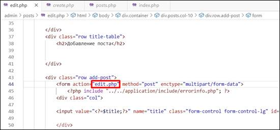
Рис. 15.18. Смена категории с create.php на edit.php
Меняем в условии редактирования постов
перемененные и добавляем ранее прописанные в create.php (рис.
15.19).
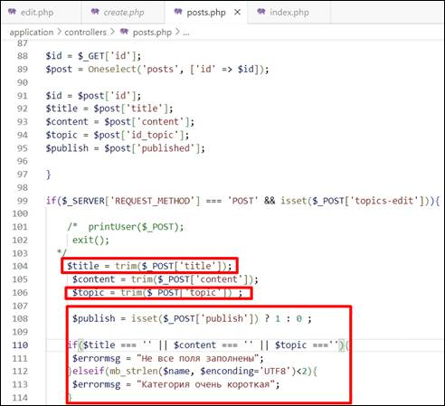
Рис. 15.19. Добавление переменной $topic в условие редактирования поста
В edit.php нужно найти «row add-post», добавив input id (рис. 15.20).
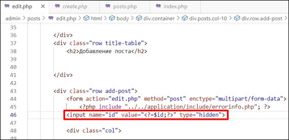
Рис. 15.20. Получение id в edit.php
Передаем id в posts.php и добавляем массив
переменной $post в
условие редактирования постов (рис. 15.21 – 15.22).
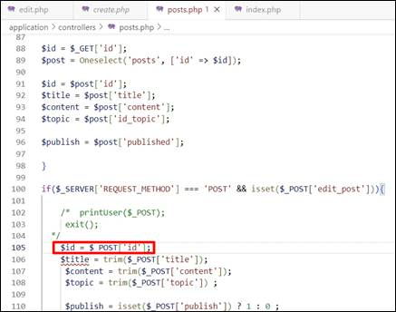
Рис. 15.21. Добавление id поста в posts.php
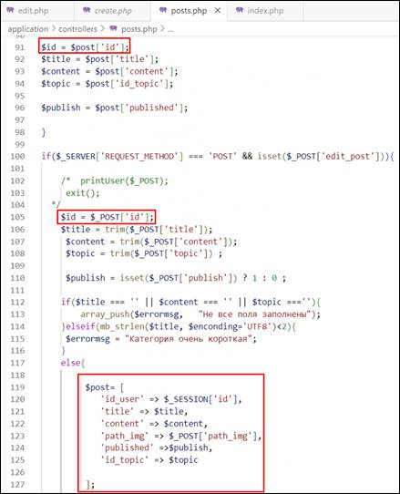
Рис. 15.22. Массив $post в условии редактирования поста
Ниже пропишем еще одно условие else для вывода в переменных title, content, publish и topic.
В edit.php меняем значение title, заключая его в массив $post. То же самое делаем со значением content (рис. 15.23).
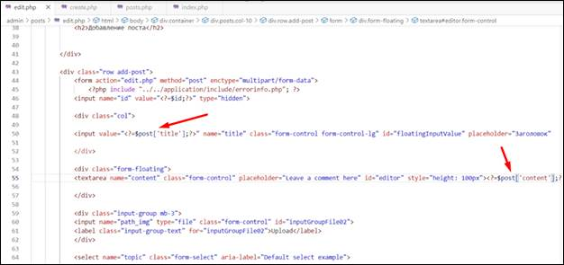
Рис. 15.23. Заключение title и content в массив
Завершив настройку edit.php
(передачу массива $post),
переходим в posts.php и копируем все условие передачи документа
(картинки), добавляем его после создания переменной $publish.
|
if (!empty($_FILES['path_img']['name'])){ $imgname =time(). "-". $_FILES['path_img']['name']; $tmpfile = $ FILES['path_img']['tmp_name']; $filetype = $_FILES['path_img']['type'] $path = ROOT_PATH . "\images\posts\\" . $imgname; if(strpos($filetype, 'image') === false){ array_push($errormsg,
'Можно загружать только изображение');
} $result = move_uploaded_file($tmpfile, $path); if ($result){ $_POST[ 'path_img'] = $imgname; }
elsef{
array_push($errormsg, "Загрузка на
сервер провалилась") ;
} else{ $title = ''; $content = ''; $publish = isset($_POST['publish']) ? 1: 0; $topic= ''; } |
Чтобы проверить
публикацию, вводим на сайте по домену localhost данные для публикации поста и переходим в phpMyAdmin (рис. 15.24).
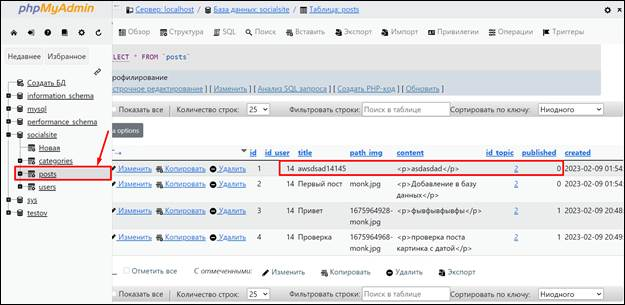
Рис. 15.24. Проверка публикации
Далее поменяем перенос с topics на posts в
хедере (рис. 15.25).
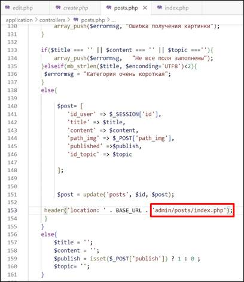
Рис. 15.25. Смена публикации на posts
Так как на сайте кнопка «опубликовать» еще не настроена, воспользуемся
меню «Edit» и через него
опубликуем пост (рис. 15.26 – 15.27).
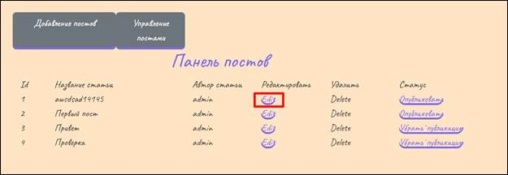
Рис. 15.26. Панель постов после добавления
очередной записи
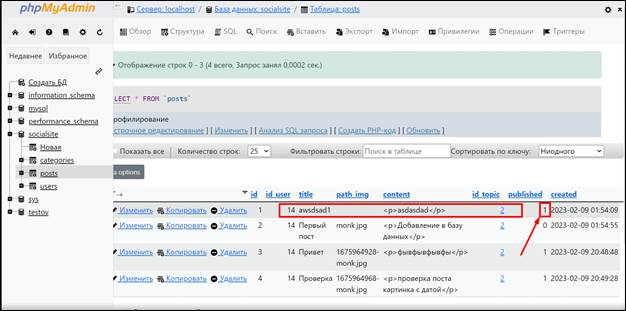
Рис. 15.27. Результат выполнения публикации
С удалением все гораздо проще: переходим в index.php
и копируем ссылку в класс «delete col-2», изменив
наименование действия с «Edit» на «Delete»
(рис. 15.28).
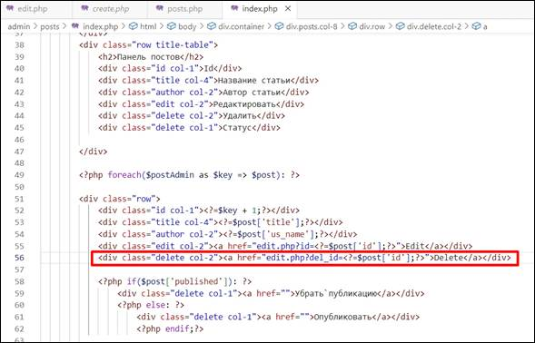
Рис. 15.28. Добавление ссылки на удаление
поста
В файле posts.php отрабатываем удаление по посту, указывая
адрес posts/index.php
в хедере (рис. 15.29).
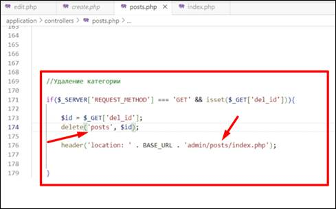
Рис. 15.29. Условие удаления поста
Удаляем один из постов на сайте и фиксируем изменения в phpMyAdmin (рис. 15.30).
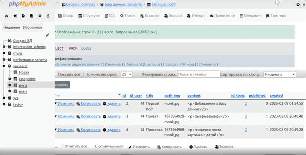
Рис. 15.30. Результат удаления поста
Чтобы не удалять/публиковать посты через «Edit», изменим код в index.php
в разделе «Убрать публикацию»/«Опубликовать» (рис. 15.31).
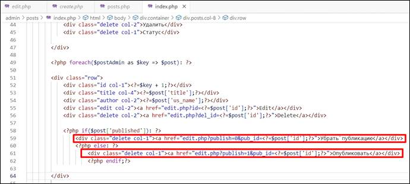
Рис. 15.31. Изменение кода index.php для удаления/публикации через кнопки
Переходим в файл posts.php и записываем метод
обновления/снятия публикации (рис. 15.32).
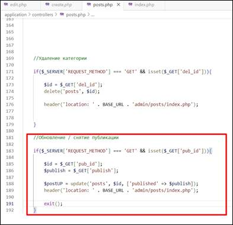
Рис. 15.32. Условие обновления/снятия
публикации
Проверяем кнопки «Убрать публикацию» и «Опубликовать» и смотрим
результаты на phpMyAdmin.
На этом пятнадцатое занятие
окончено!
В рамках этого занятия мы сделали прикрепление
картинок для постов, оптимизировали ошибки, выполнили редактирование и статус
публикации для постов.
На следующем занятии мы выполним вывод постов на главную страницу, отображение одного поста и
сортировку постов по категориям.
После прохождения каждого занятия рекомендуем повторить все термины,
которые были изучены, а также закрепить пройденный материал, ответив на
контрольные вопросы.
|
Это нужно запомнить |
|
|
|
Функция «realpath()» - раскрывает все символические ссылки, переходы типа
/./, /../ и лишние символы / в пути path, возвращая канонизированный
абсолютный путь к файлу. Загрузка одного файла - чтобы форма
отправила файл, необходимо использовать только метод POST для отправки данных
и добавить к тегу <form> атрибут
enctype="multipart/form-data", который определяет способ кодирования
данных формы при их отправке на сервер. Загрузка нескольких файлов - для загрузки
сразу нескольких файлов к <input type="file">
нужно добавить атрибут multiple, а к имени
поля – []. Свойство name – имя документа. Свойство type – тип документа. Свойство tmp_name – место временного хранения
загруженного документа. Свойство error – количество ошибок. Свойство size – размер документа. Супер
глобальная переменная $ FILES – ассоциативный массив (array) элементов, загруженных
в текущий скрипт через метод HTTP POST. |
1. Что такое realpath()?
2. Что такое $_FILES?
3. За что отвечает tmp_name?
Самостоятельно
cделать переменную
массивом во всех файлах, где есть вывод информации об ошибках и применить
функцию к этим ошибкам. Функции array_push представлены в занятии в
файле posts.php. Также потребуется
вывести циклом все ошибки на странице, то есть подключить файлик errorInfo. (Пояснение:
ошибки, если их много, должны выводиться списком, а не одна, которая сработала
первой). Пример того, что должно получиться:
· Логин очень короткий
· Не все поля заполнены
· Пароли не совпадают